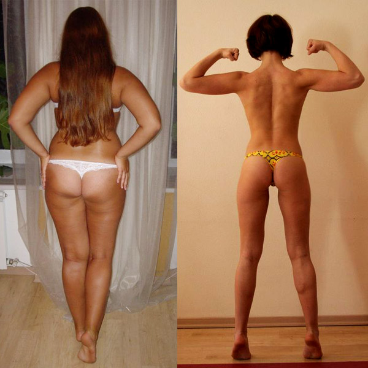

Hogyan fogytam 34 kg-t
Kirakva , 19:51 | szerző: Kinga

Szia, veletek újra Kinga! Megszeretném veltek osztani a kis győzelmemet az összetett súllyal. Az én igazi történetem - ez a betegség, vállás a szeretett férjemmel, és a sikeres nehézségek elhárítása.
Azzal akarom kezdeni, hogy a vetélés után, túléltem az erős stresszt, és a stressz hátterében hormonális elégtelenség történt és kifejlődőtt a depresszió. Bár én nem éreztem jól magamat, 2 szer többet mint mindig. Mivel én hízásra hajló vagyok, rögtön elkezdtem gyorsan összeszedtem a súlyt. A részösszeg szomorú - 92 kg . A férjem először igyekezett nekem segíteni, próbálr kijutatni a depresszióból, de aztán csak köpött rám.
Egy gyönörű szép napon, a férjem azt mondta, hogy neki nem kell egy hibás feleség , melyik nem tudja kiviselni a gyermeket , és különben is egy kövér tehénre hasonlít . El sem tudjátok képzelni , mekkore volt ez az ütést számomra: egy szeretett ember megalázott éngem, ő kényszerített arra hogy undorítósn érezzem magam, és aztán csak beadta a vállást.
Már öngyílkos akartam lenni, mert az életem nem tudtam elképzelni a szeretett ember és gyermek nélkűl. A barátnőm alíg bírt engem behúzni az orvoshoz, és ő azt tanácsolta, hogy lefogyjak , hogy normalizáljam a hormonokat, és egy egészséges baba szülessen...
Eljött az idő, hogy kezdjek valamit magammal!
Az ex-férjem szavai az értéktelenségemeimről nem hagyott megnyugodni, és állva a tükör előtt, elborzadva a nehézségi testem miatt, én úgy döntöttem hogy meg kell változtatnom saját magamat, és legyek tökéletes.
Szóval, én azonnal elkezdtem az a saját testem átalakulását: kipróbáltam mindenféle testmozgásokat, karcsúsító jógát, tablettákat,25-os filmkockát, drága krémeket, anti-cellulit kemény masszázsokat és sokkal mindenfele drágább dolgot. MIND EZ NEM MŰKÖDIK. Ez nem segít. Hasznavehetetlen.
Én már meg akartam békűlni az adott helyzettel, a súly nem engedtet, és még mindig állt 92 kg ... Sírni akartam a haszontalanságom miatt.
Szóval én majdnem abbahasztam ezt a dolgot "időtlen időre elhalasztottam" Otthagytam ezt az ügyet .
Fogyás rövid idő alatt- lehetséges?!
Egy nap blogok nézegetése után az interneten, belebotlottam egy blogba, ahol egy nő valahogy csodával módon lefogyott OTTHON az elmúlt hónapban 22 kg-ra segítségével a valami () Én természetesen érdeklődtem azonnal és részletesen megvizsgáltam.
Eleinte nem hittem a hatásosba - már próbáltam mindenféle tablettát, mert már olyan sok mindent reklámozott a tévében, hogy nem segít ... De ő elég tisztelt az interneten, és mutatott megdöbbentő képek "előtte/utána", és én úgy döntöttem, hogy bízok a tanácsaiban.
Szóval megrendeltem ezt a komplexet (), a küldmeny néhány nap alatt érkezett utánvéttel a postára. Mindent kicsomagoltam, elolvastam az utasításokat, és elkezdtem aktívan használni.
Mi az eredmény?
Nagyon könnyűn használtam - szedtem reggel és este. Hogy őszinte legyek, én félszívvel vettem ezt je, és én nem hittem, hogy ez így nagyon hatásos. De fokozatosan kezdtem észrevenni, hogy a régi súlyom el kezdett eltűnni .
Úgy döntöttem, hogy várok egy hetet , majd felálltam a mérlegre .... Majdnem leesett az állam a földre! A TÖMEGEM 6 KILOGRAMMRA CSÖKKENT!!! 7 nap allat! Ti eltudjátok ezt hienni??? Nem hittem a szememnek, és még egyszer lemértem - 7 kilogramm200 gramm elment, minden helyes!Én nem híbasztam, és nem őrűltem meg! Nem tudom leírni az örömöm. Az utóbbi időben ennyire örültem talán 20 évvel ezelőtt :)
Én továbbra is, folytattam a komplex rendszeres használatát 2 hónapon bellűl, és amikor következő alkalommal a mérlegre álltam , csodálkozva lettem - -34 KG 2 HÓNAP ALLAT!!! Meg ismételten ellenőrizztem többször - a nyíl a mérlegen azt mutatta58 KG!
A munkahelyemen, természetesen mindenki észrevette, hogy én gyorsan fogytam, és elkezdtek kérdézni. A nagyon szimpatikus nem házas kollégam kezdett vigyázni rám, mondván, hogy ő mindig irigyelte a férjemet, mondván, én mindig is okos és érdekes voltam, és most szebb is lettem :)
Az életem egészben, az ilyen gyors fogyás miatt megváltozott. Most férfiak nem engednek átmenni engem. sok bókokat kapok minden oldalról. És fürödni a bókokban, nagyon kellemes.
Tudjátok, én hamarosan férjhez megyek. Igen, a kedves kollégámal a munkáhelyemről . És nem csak úgy, és már új babát hotdozok :) A szervetem a lefogyott testsúly miatt leküzdte a hormonális hibát, és most felkészültem arra, hogy teljes értékű anya legyek egy boldog és erős családban, ahol mindenki mindenkit értékel és szeret egymást!
Köszönhetően az ex-férjemnek, aki egyszer megsértett és szakított velem , én legyőztem a betegséget, depressziót és extra kilókat, és most én vagyok a legboldogabb, karcsúbb és szébb!!!
Nagyon boldog vagyok, hogy minden így történt. Egyidejűleg a fogyás mellet megértettem, hogy a sokunk problémája, hogy a legegyszerűbb dolgok hatástalannak tűnnek. A nehezebbel , példaul, műtés - hatékonynak. De ez nem így van. Ledobni a túl tömeget, kicsi idő allatt, természetesen, gyors és biztonságos módon, diétázás és testmozgás nélkül. Ellenőrizve! De, lányok, a súly, azóta sem nőtt a térfogat ugyanaz marad :)

Akit érdekel - megrendeltem
Az ár Kettő mozijegynek , vagy egy boltba menésnek felel meg. Döntsétek el magadatok - sok-e vagy sem. Véleményem - egy ilyen hatékony eszközért kétszer többet is elkérhetnek!
Nos, nos, remélem ez az információ hasznos volt, és ön, végül meg fogja találni a kívánt a mérete és súlya a legrövidebb idő alatt! Sok Szerencsét önöknek!





Blogerek online


És még 327 avatar nélkül...